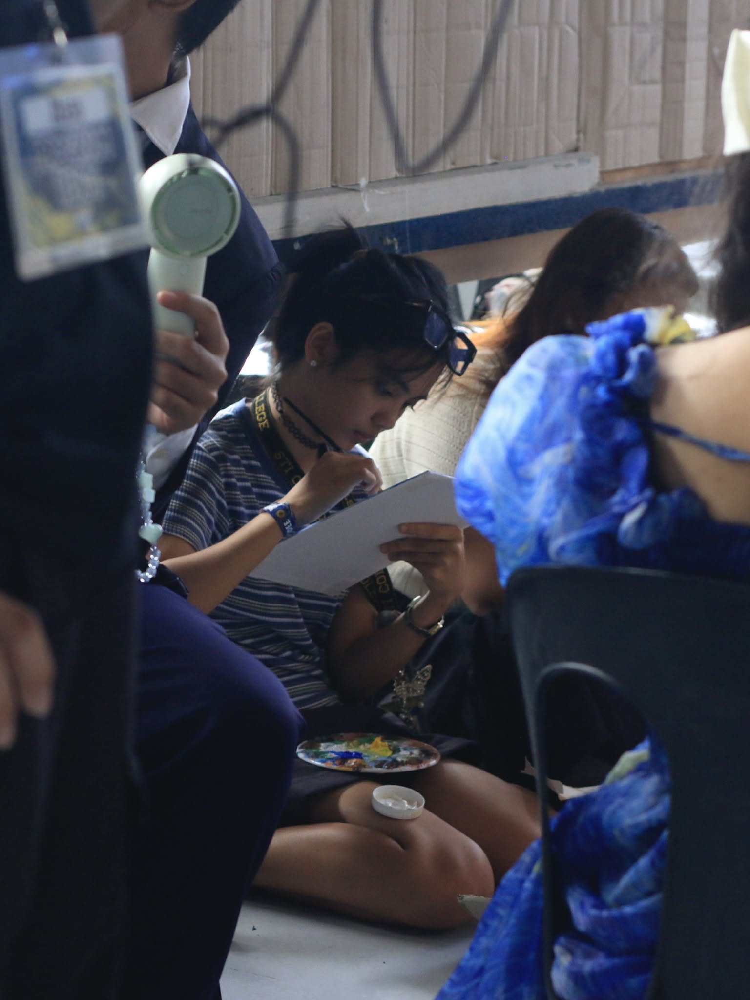
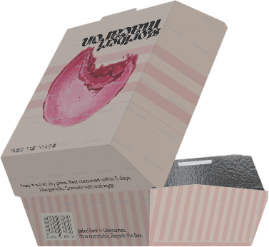
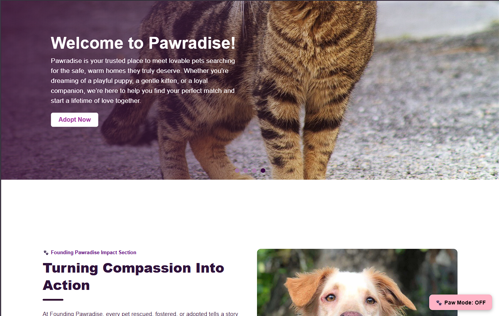
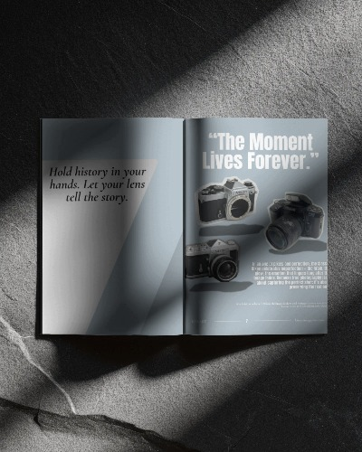

Multimedia Arts Student

I’m a Multimedia Arts student with a deep love for creativity in all its forms.
While I enjoy exploring different mediums, I’m especially passionate about handicrafts, bringing ideas to life through hands-on, detailed work.
Creating something tangible from imagination is what truly excites me.
Beyond crafts, I also enjoy designing magazines, developing mockups, and creating website layouts.
I’m fascinated by how visual elements, typography, and layout come together to tell a story.
Whether working on print or digital platforms, I strive to design pieces that are both aesthetically engaging and thoughtfully structured.
For me, art is not just about creating, it’s about expressing, experimenting, and continuously learning.


